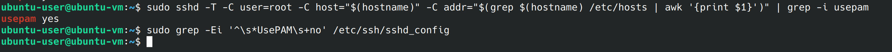
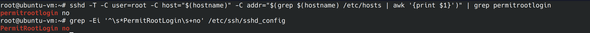

Hardening Ubuntu SSH Server with CIS Benchmarks
Configuring a secure SSH Server on Ubuntu Server 22.04 LTS, June 3rd, 2023
What are CIS Benchmarks?
CIS benchmarks are best practices for configuring computer systems and networks. The Center For Internet Security(CIS) is a nonprofit organization that makes these benchmarks available to anyone who wants them free of charge. Since I’m running an Ubuntu virtual machine, it’s a good idea to ensure that my SSH server is configured securely.
Implementing the Benchmarks
To implement the CIS controls, we are going to reference section 5.2 of the “CIS Ubuntu Linux 22.04 LTS Benchmark”, which can be obtained at https://www.cisecurity.org/. All the controls in section 5.2 and it’s subsections are tagged “automated”. This means that we can check if the configurations need to be changed using scripts provided in the benchmark.
Important Notes Before We Begin
This is my journey securing my server, I’m only going to show remediation steps when my server fails a check. If you are configuring your own server, you may have different outcomes and should reference the benchmark to remediate the problem. The scripts I’m using will be the ones provided in the benchmark. When I refer to “the config file” I’m referring to /etc/ssh/sshd_config. In the screenshots the shell and gui change as I enter commands directly into the virtual machine and sometimes remote in using SSH and different shells. I recommend using BASH and running the commands as the root user.
5.2.1
This is the first control we are going to implement. The /etc/ssh/sshd_config file contains the configuration settings for SSH. Access to this file needs to be limited to super users. If the config file is changed by unauthorized or hostile individuals, it can allow ssh connections we wouldn’t otherwise allow. We can run the below command to check the permissions of the config file:
stat /etc/ssh/sshd_config 
Looking at the first line that says access, we can see the Uid and Gid are set to root, however there are more permissions than necessary. Currently the read permissions are available to the owner(root), the group(root) and other(everyone else). We don’t want to the ssh config file available to everyone so we can change this with chmod.
sudo chmod 600 /etc/ssh/sshd_config 5.2.2
Next up we’ll ensure that the SSH host key can only be accessed by the appropriate user.
Unauthorized access will allow an attacker to impersonate the host. Page 622 of the benchmark
contains the script we need to run. To run the script we can create a file called 5.2.2.sh and
paste the script from the pdf.
An error I encountered was with the format of the script, copying and pasting directly returned
syntax errors. I’ve reformatted the script, see below:
#!/usr/bin/env bash
{
l_output=""
l_skgn="ssh_keys" # Group designated to own openSSH keys
l_skgid="$(awk -F: '($1 == "'"$l_skgn"'"){print $3}' /etc/group)"
awk '{print}' <<< "$(find /etc/ssh -xdev -type f -name 'ssh_host_*_key' -exec stat -L -c "%n %#a %U %G %g" {} +)" |
(
while read -r l_file l_mode l_owner l_group l_gid; do
[ -n "$l_skgid" ] && l_cga="$l_skgn" || l_cga="root"
[ "$l_gid" = "$l_skgid" ] && l_pmask="0137" || l_pmask="0177"
l_maxperm="$(printf '%o' $((0777 & ~$l_pmask)))"
[ $(( $l_mode & $l_pmask )) -gt 0 ] && l_output="$l_output\n - File: \"$l_file\" is mode \"$l_mode\" should be mode: \"$l_maxperm\" or more restrictive"
[ "$l_owner" != "root" ] && l_output="$l_output\n - File: \"$l_file\" is owned by: \"$l_owner\" should be owned by \"root\""
if [ "$l_group" != "root" ] && [ "$l_gid" != "$l_skgid" ]; then
l_output="$l_output\n - File: \"$l_file\" is owned by group \"$l_group\" should belong to group \"$l_cga\""
fi
done
echo "5.2.2"
if [ -z "$l_output" ]; then
echo -e "\n- Audit Result:\n *** PASS ***\n"
else
echo -e "\n- Audit Result:\n *** FAIL ***$l_output\n"
fi
)
}
Run the script by navigating to the same folder it’s stored in and run the below command
bash ./5.2.2.sh 
Since the test passed, no remediation is required and we can move on.
5.2.3
As we focused on private keys in the last step, we’re going to focus on the public key now. We are going to ensure that write and execute permissions aren’t available to unauthorized users, as this could allow unauthorized private keys to be authorized.

As we can see in the access lines, the group and other files are read only, this means we can move on to the next security control.
5.2.4
For this control, we want to make sure we are limiting who has SSH access by using allow or deny group or user lists. Limiting access to only users who require access, follows the principle of least privilege. The CIS benchmark provides 2 different scripts we can run to see if this policy is in place.
sshd -T -C user=root -C host="$(hostname)" -C addr="$(grep $(hostname) /etc/hosts | awk '{print $1}')" | grep -Pi '^\h*(allow|deny)(users|groups)\h+\H+(\h+.*)?$' grep -rPi '^\h*(allow|deny)(users|groups)\h+\H+(\h+.*)?$' /etc/ssh/sshd_config* If this control is in place, we should see the list when running one of these options. It turns out this isn’t active on my server, let’s fix that. We’ll use nano to edit the file. I’m going to use the allow user option.
sudo nano /etc/ssh/sshd_config 5.2.5
An important part of indecent response and digital forensics is log analysis. For the ssh logs we want to make sure we have logging enabled. The default logs are going to be “INFO” mode. Info mode is the default and will record login information. Verbose mode gives us more information, including when a user logged out and the SSH key fingerprint. We can check the mode with:
sshd -T -C user=root -C host="$(hostname)" -C addr="$(grep $(hostname) /etc/hosts | awk '{print $1}')" | grep loglevel Since my server is in “INFO” mode and I want it to be in “VERBOSE” mode, we’re going to edit the config file again.
sudo nano /etc/ssh/sshd_config We remove the #, “uncommenting” the line, then we change the “INFO”, to “VERBOSE”.

5.2.6
For this control we’re going to ensure Pluggable Authentication Module(PAM) is enabled. PAM
allows us to set up restrictions based on things like ip address, time and other factors.
We’re going to run the below command and we want to get a yes in return.
sshd -T -C user=root -C host="$(hostname)" -C addr="$(grep $(hostname) /etc/hosts | awk '{print $1}')" | grep -i usepam Since we got a yes, we want to run the next command from the benchmark and we shouldn’t see anything.
grep -Ei '^\s*UsePAM\s+no' /etc/ssh/sshd_config 
5.2.7
In this security control we are going to disallow logging in as root through SSH. If administrative actions need to be taken, the admin can escalate privileges. Having admins use their own accounts makes it easier on investigators to attribute actions to the specific admin.
sshd -T -C user=root -C host="$(hostname)" -C addr="$(grep $(hostname) /etc/hosts | awk '{print $1}')" | grep permitrootlogin 
What we wanted to see was “PermitRootLogin no”. We’re going to use nano to edit the config file again. Uncomment the “PermitRootLogin” line and replace without-password to no.
sudo nano /etc/ssh/sshd_config Now that we’ve applied the recommended remediation, let’s run both the commands the benchmark recommends again. The results may appear similar, but if you look closely, one output will contain uppercase letters while the other will not. Two 2 commands are going to check that root login isn’t permitted in two different locations.
5.2.8
For this control we’re going to disable authentication using .rhosts or hosts.equiv. While this authentication method won’t work if it’s not enabled in pam.conf, we disable it to add extra security. We want to see a “no” and a blank line. Since my server passes, I can move onto the next control.
sshd -T -C user=root -C host="$(hostname)" -C addr="$(grep $(hostname) /etc/hosts | awk '{print $1}')" | grep hostbasedauthentication 5.2.9
In this control we’re going to ensure blank passwords are disabled. As this is already configured on my server, we can move on.
sshd -T -C user=root -C host="$(hostname)" -C addr="$(grep $(hostname) /etc/hosts | awk '{print $1}')" | grep permitemptypasswords 5.2.10
For this control we’re going to prevent the user from setting environment variables, potentially bypassing some of our security controls. We’re going to enter the below commands to verify the control is implemented.
sshd -T -C user=root -C host="$(hostname)" -C addr="$(grep $(hostname) /etc/hosts | awk '{print $1}')" | grep permituserenvironment grep -Ei '^\s*PermitUserEnvironment\s+yes' /etc/ssh/sshd_config We were looking for a “no” and a blank line, so we can move forward.
5.2.11
For this control, we’re going to ensure that the user provides a password by ignoring .rhosts and .shosts. We’ll do this using the two commands below.
sshd -T -C user=root -C host="$(hostname)" -C addr="$(grep $(hostname) /etc/hosts | awk '{print $1}')" | grep hostbasedauthentication grep -Ei '^\s*ignorerhosts\s+no\b' /etc/ssh/sshd_config We are looking for a yes and a blank line. No remediation is required, so let’s go to the next step.
5.2.12
In this control we’re going to disable X11 forwarding. We disable this because of the potential that vulnerabilities on the server can compromise the client machine. We’re going to use the command from the benchmark and we’re hoping to get a “no”.
sshd -T -C user=root -C host="$(hostname)" -C addr="$(grep $(hostname) /etc/hosts | awk '{print $1}')" | grep -i x11forwarding It turns out X11 forwarding is on, we’re going to use nano to edit the config file again. X11 forwarding was already uncommented, so we just change the “yes” to “no”.
nano /etc/ssh/sshd_config Now if we run the command again, we can see X11 forwarding is off.
5.2.13
This control ensures we are using a strong encryption algorithm. The benchmark states the only FIPS 140-2 compliant ciphers our SSH server supports are aes256-ctr, aes192-ctr, aes128-ctr. Let’s run the command from the benchmark and see what our server has enabled.
sshd -T -C user=root -C host="$(hostname)" -C addr="$(grep $(hostname) /etc/hosts | awk '{print $1}')" | grep ciphers 
The benchmark says to make sure we don’t have 3des-cbc, aes128-cbc, aes192-cbc or aes256-cbc enabled. Since we don’t have any of the ones listed above enabled, we can move onto 5.2.14
5.2.14
SSH uses a cryptographic technique called Message Authentication Code(MAC). The MAC algorithm
ensures the data hasn’t been tampered with. Using a weak MAC algorithm exposes users to man in
the middle attacks.
We are going to use the provided command to check which ciphers are in use and disable any that
are considered weak.
sshd -T -C user=root -C host="$(hostname)" -C addr="$(grep $(hostname) /etc/hosts | awk '{print $1}')" | grep -i "MACs" Comparing the output to the list of weak algorithms on page 651 of the benchmark, we can see there are several weak standards in use:
- umac-64-etm@openssh.com
- umac-128-etm@openssh.com
- hmac-sha1-etm@openssh.com
- umac-64@openssh.com
- umac-128@openssh.com
- hmac-sha1
We can edit the config file with nano and add a line specifying only the ciphers we want to use.
nano /etc/ssh/sshd_config MACs hmac-sha2-512-etm@openssh.com,hmac-sha2-256-etm@openssh.com,hmac-sha2-512,hmac-sha2-256 If we run the command again, we can see the updated list no longer contains weak algorithms.
5.2.15
Key exchange refers to two parties swapping cryptographic keys. If this exchange uses a weak algorithm, it can be vulnerable to a man in the middle attack. Using the provided command we can list allowed algorithms.
sshd -T -C user=root -C host="$(hostname)" -C addr="$(grep $(hostname) /etc/hosts | awk '{print $1}')" | grep -i "MACs" Since I’m using Konsole, I can use ctl + shift + f to search the konsole for the weak algorithms:
- diffie-hellman-group1-sha1
- diffie-hellman-group14-sha1
- diffie-hellman-group-exchange-sha1
The weak key exchange algorithms weren’t in the list, so we can move on to the next control.
5.2.16
In this control we’re going to disable SSH tunneling. Tunneling can be used to create a backdoor into the network. Let’s run the provided command.
sshd -T -C user=root -C host="$(hostname)" -C addr="$(grep $(hostname) /etc/hosts | awk '{print $1}')" | grep -i allowtcpforwarding It turns out tunneling is allowed, let’s use nano to change this in the config file.
nano /etc/ssh/sshd_config I’m going to change AllowTcpForwarding from “yes” to “no” and uncomment it. Now if we run the below two commands we should see a “no” and a blank line.
sshd -T -C user=root -C host="$(hostname)" -C addr="$(grep $(hostname) /etc/hosts | awk '{print $1}')" | grep -i allowtcpforwarding grep -Ei '^\s*AllowTcpForwarding\s+yes' /etc/ssh/sshd_config 5.2.17
In this control we’re going to make sure the banner is configured, it’s usually off by default. The banner message contains a warning message that let’s people know that unauthorized connections are illegal. This can be useful during prosecution of cyber criminals. Let’s run the command the benchmark provides us.
sshd -T -C user=root -C host="$(hostname)" -C addr="$(grep $(hostname) /etc/hosts | awk '{print $1}')" | grep banner The output we got was “banner none”, we wanted to see “banner /etc/issue.net”. We’re going to go into the config file again and change “Banner to /etc/issue.net”
nano /etc/ssh/sshd_config 
Now that the banner is enabled, we can change the default banner message by editing /etc/isssue.net. What to put there is out of the scope of this project so let’s move on to the next control.
5.2.18
For this control we’re going to specify the maximum login attempts available to a connection. This is to prevent brute force attacks. When a client hits half the attempt number, it writes the error messages to the syslog file. Let’s run the command and see the number of allowed attempts.
sshd -T -C user=root -C host="$(hostname)" -C addr="$(grep $(hostname) /etc/hosts | awk '{print $1}')" | grep maxauthtries
On my server the maximum number of attempts is 6. I’m not going to change that. The number is set
in the config file under “maxauthtries”.
Next we’re going to run the final command for this step and it should return a blank line.
grep -Ei '^\s*maxauthtries\s+([5-9]|[1-9][0-9]+)' /etc/ssh/sshd_config 5.2.19
In this control we’re going to add a protection against denial of service attacks. We do this by limiting the number of connection requests by users who haven’t already authenticated(logged in). Let’s run the command the benchmark gives us.
sshd -T -C user=root -C host="$(hostname)" -C addr="$(grep $(hostname) /etc/hosts | awk '{print $1}')" | grep -i maxstartups The benchmark recommends we have “maxstartups” set to 10:30:60 or more restrictive. Let’s look at what these numbers means and see if our server meets the benchmark. The first number is “start”, when the rule begins to apply. So after 10 unauthenticated sessions, the rule begins to apply. The second number is the number of connections per second. In our case and in the benchmark this is 30. The final number is the number of attempts before all new connections are declined. In this case ours is set to 100 but it should be 60 or less. We can edit our config file as we’ve done many times before.
nano /etc/ssh/sshd_config Now that we’ve updated our maxstartups, we can run the commands from the benchmark and we should see 10:30:60 or a more restrictive setting, and a blank line for the second command.
sshd -T -C user=root -C host="$(hostname)" -C addr="$(grep $(hostname) /etc/hosts | awk '{print $1}')" | grep -i maxstartups grep -Ei '^\s*maxstartups\s+(((1[1-9]|[1-9][0-9][0-9]+):([0-9]+):([0-9]+))|(([0-9]+):(3[1-9]|[4-9][0-9]|[1-9][0-9][0-9]+):([0-9]+))|(([0-9]+):([0-9]+):(6[1-9]|[7-9][0-9]|[1-9][0-9][0-9]+)))' /etc/ssh/sshd_config 5.2.20
This control is another denial of service protection. We’re going to limit the number of sessions to avoid overwhelming the server. This is decided by the “maxsessions” variable in the config file. Let’s run the command below and see how many connections are currently allowed.
sshd -T -C user=root -C host="$(hostname)" -C addr="$(grep $(hostname) /etc/hosts | awk '{print $1}')" | grep -i maxsessions My server has max sessions set to 10. Let’s run the next command, it shouldn’t return anything other than a blank line.
grep -Ei '^\s*MaxSessions\s+(1[1-9]|[2-9][0-9]|[1-9][0-9][0-9]+)' /etc/ssh/sshd_config 
5.2.21
For this control we’ll look at “LoginGraceTime”. This parameter indicates the amount of time a user has to authenticate. Limiting the login grace time can help protect against brute force attacks and it’ll limit the number of unauthenticated connections active at one time. We’ll run the below 2 commands and should see 60 and a blank line. 60 seconds is what the benchmark recommends so I’m going to use that for my server.
sshd -T -C user=root -C host="$(hostname)" -C addr="$(grep $(hostname) /etc/hosts | awk '{print $1}')" | grep logingracetime It appears the grace time is currently set to 120. We can nano into the config file and change it to 60.
nano /etc/ssh/sshd_config The config file had the time listed as 2m, denoting the time is listed in minutes but printed in seconds. I’ve uncommented the line and changed the 2 to a 1. When running the commands again, we get the desired output.
5.2.22
In the final control we’re going to stop connections from staying alive indefinitely. Letting connections live forever can cause resource exhaustion. There are 2 variables that control this, “clientaliveinterval” and “clientalivecountmax”. The “clientaliveinterval” needs to be greater than 0. We can do so with the command provided.
sshd -T -C user=root -C host="$(hostname)" -C addr="$(grep $(hostname) /etc/hosts | awk '{print $1}')" | grep clientaliveinterval The parameter doesn’t work unless it’s greater than 0, so we’ll need to edit it in the config file. Before I do that I’m going to check “clientalivecountmax” so we don’t have to go into the file multiple times if the second parameter doesn’t pass the benchmark.
Conclusion
Not following the guidance of the benchmarks can be negligent and leave your organization and users at risk of compromise. Implementing CIS benchmarks can seem long and tedious, but going through the process you can learn an incredible amount while securing the respective services. I highly recommend anyone interested in cyber security go through the process of implementing a CIS benchmark for something they use on a daily basis.